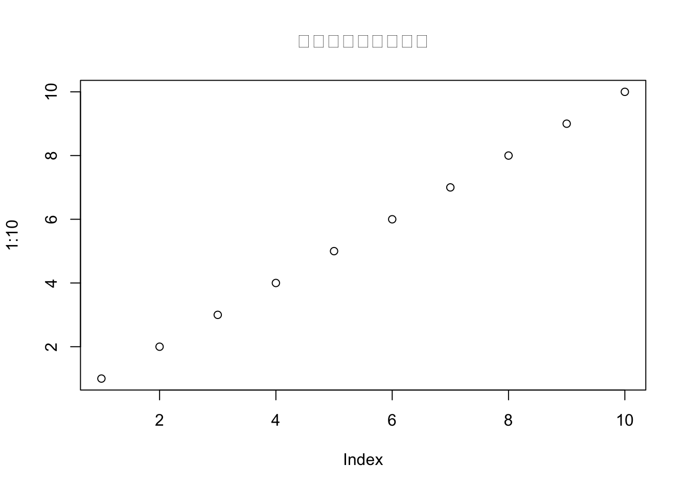

中文文章模板
2030年6月5日
1 简介
R软件的bookdown扩展包是R Markdown的增强版， 支持自动目录、文献索引、公式编号与引用、定理编号与引用、图表自动编号与引用等功能， 可以作为LaTeX的一种替代解决方案， 在制作用R进行数据分析建模的技术报告时， 可以将报告文字、R程序、文字性结果、表格、图形都自动地融合在最后形成的网页或者PDF文件中。
Bookdown使用的设置比较复杂， 对初学者不够友好。 这里制作了一些模板， 用户只要解压缩打包的文件， 对某个模板进行修改填充就可以变成自己的中文图书或者论文。 Bookdown的详细用法参见https://bookdown.org/yihui/bookdown/， 在李东风的《统计软件教程》也有部分介绍。
index.Rmd文件的内容包含一些常用功能的示例，
用户可以在编辑器中打开此文件参考其中的做法。
Bookdown如果输出为网页， 其中的数学公式需要MathJax程序库的支持， 用如下数学公式测试浏览器中数学公式显示是否正常：
\[ \text{定积分} = \int_a^b f(x) \,dx \]
如果显示不正常， 可以在公式上右键单击， 选择“Math Settings–Math Renderer”， 依次使用改成“Common HTML”，“SVG”等是否可以变成正常显示。 PDF版本不存在这样的问题。
2 安装设置
使用RStudio软件完成编辑和转换功能。 在RStudio中，安装bookdown等必要的扩展包。
本模板在安装之前是一个打包的zip文件，
在适当位置解压（例如，在C:/myproj下），
得到MathJax, Books/Cbook, Books/Carticle等子目录。
本模板在Books/Carticle中。
为了利用模板制作自己的中文论文，
将Books/CArticle制作一个副本，
改成适当的子目录名，如Books/Myarticle。
打开RStudio软件，
选选单“File - New Project - Existing Directory”，
选中Books/Myarticle子目录，确定。
这样生成一本书对应的R project（项目）。
为了将模板内容替换成自己的内容，
只要修改index.Rmd文件，
删除原来的不必要的内容，
替换成自己的内容。
后面的§4.1 和§4.2 给出了将当前的书转换为网页和PDF的命令， 复制粘贴这些命令到RStudio命令行可以进行转换。
3 编写自己的内容
3.2 图形自动编号
用R代码段生成的图形，
只要具有代码段标签，
且提供代码段选项fig.cap="图形的说明文字"，
就可以对图形自动编号，
并且可以用如\@ref(fig:label)的格式引用图形。
如：

Figure 3.1: 图形说明文字
引用如：参见图3.1。
引用中的fig:是必须的。
在通过LaTeX转换的PDF结果中， 图形是浮动的。
3.3 表格自动编号
用R代码knitr::kable()生成的表格，
只要具有代码段标签，
并且在knitr::kable()调用时加选项caption="表格的说明文字"，
就可以对表格自动编号，
并且可以用如\@ref(tab:label)的格式引用表格。
如：
| 自变量 | 因变量 |
|---|---|
| 1 | 1 |
| 2 | 4 |
| 3 | 9 |
| 4 | 16 |
| 5 | 25 |
| 6 | 36 |
| 7 | 49 |
| 8 | 64 |
| 9 | 81 |
| 10 | 100 |
引用如：参见表3.1。
引用中的tab:是必须的。
在通过LaTeX转换的PDF结果中， 表格是浮动的。
3.4 数学公式编号
不需要编号的公式，
仍可以按照一般的Rmd文件中公式的做法。
需要编号的公式，
直接写在\begin{align}和\end{align}之间，
不需要编号的行在末尾用\nonumber标注。
需要编号的行用(\#eq:mylabel)添加自定义标签，
如
\[\begin{align} \Sigma =& (\sigma_{ij})_{n\times n} \nonumber \\ =& E[(\boldsymbol{X} - \boldsymbol{\mu}) (\boldsymbol{X} - \boldsymbol{\mu})^T ] \tag{3.1} \end{align}\]
引用如：协方差定义见(3.1)。
3.5 文献引用与文献列表
将所有文献用bib格式保存为一个.bib文献库，
如模板中的样例文件mybib.bib。
可以用JabRef软件来管理这样的文献库，
许多其它软件都可以输出这样格式的文件库。
为了引用某一本书， 用如：参见(Wichmann and Hill 1982)。
被引用的文献将出现在一章末尾以及全书的末尾， 对PDF输出则仅出现在全书末尾。
4 转换
4.1 转换为网页
用如下命令将整本书转换成一个网页， 称为gitbook格式：
为查看结果，
在_book子目录中双击其中的_main.html文件，
就可以在网络浏览器中查看转换的结果。
重新编译后应该点击“刷新”图标。
网页可以通过Chrome网络浏览器中的“打印”功能转换为PDF。 选菜单项“打印”， 选择一个打印到PDF的打印机， 如“另存为PDF”打印机， 或Windows操作系统的“Microsoft print to PDF”打印机， 在“更多设置”中选择缩放率为90%， 点击“保存”按钮就可以将网页转换成PDF格式。
4.2 通过LaTeX生成PDF
Bookdown可以借助TinyTeX编译软件将文章转换成一个PDF文件。
这需要用户对LaTeX有一定的了解，
否则一旦出错，
就完全不知道如何解决。
用户如果需要进行LaTeX定制，
可修改模板中的preamble.tex文件。
转换为PDF的命令如下：
在转换过程中可能需要联网下载所需的软件或者格式包。
在_book子目录中找到_main.pdf文件，
这是转换的结果。
Bookdown使用rmarkdown扩展包和pandoc软件、LaTeX软件， 在R中运行如下命令可以自动安装LaTeX软件， 称为TinyTeX:
安装过程需要从国外的服务器下载许多文件，
在国内的网络环境下有可能因为网络超时而失败。
如果安装成功，
TinyTeX软件包在MS Windows系统中一般会安装在
C:\Users\用户名\AppData\Roaming\TinyTeX目录中，
其中“用户名”应替换成系统当前用户名。
如果需要删除TinyTeX软件包，
只要直接删除那个子目录就可以。
为了判断TinyTeX是否安装成功， 在RStudio中运行
结果应为TRUE,
出错或者结果为FALSE都说明安装不成功。
4.3 上传到网站
如果书里面没有数学公式，
则上传到网站就只要将_book子目录整个地用ftp软件传送到自己的网站主目录下的某个子目录即可。
但是，为了支持数学公式，就需要进行如下的目录结构设置：
- 设自己的网站服务器目录为
/home/abc， 将MathJax目录上传到这个目录中。 - 在
/home/abc中建立新目录Books/Mybook。 - 将
_book子目录上传到/home/abc/Books/Mybook中。 - 这时网站链接可能类似于
http://dept.univ.edu.cn/~abc/Books/Mybooks/_book/index.html, 具体链接地址依赖于服务器名称与主页所在的主目录名称。
如果有多本书，
MathJax仅需要上传一次。
因为MathJax有三万多个文件，
所以上传MathJax会花费很长时间。
注意：下面一行用于生成文献目录标题， 不要删去下面的行：